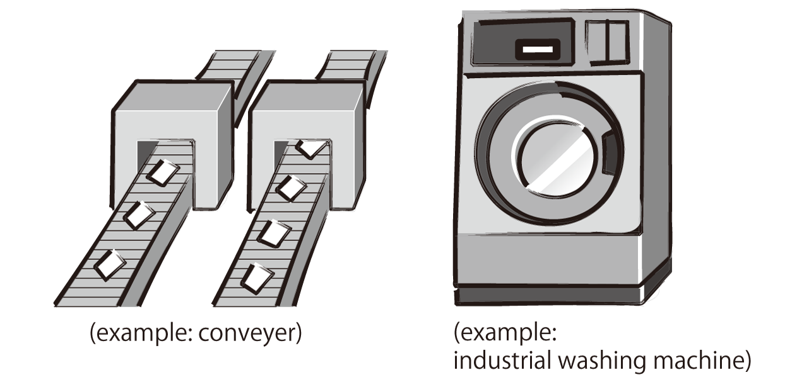
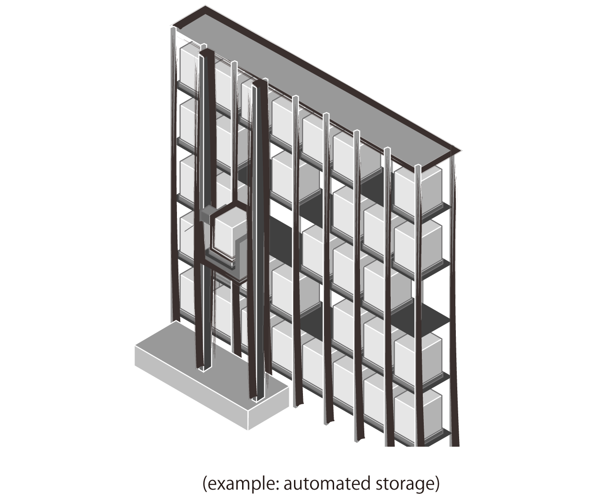
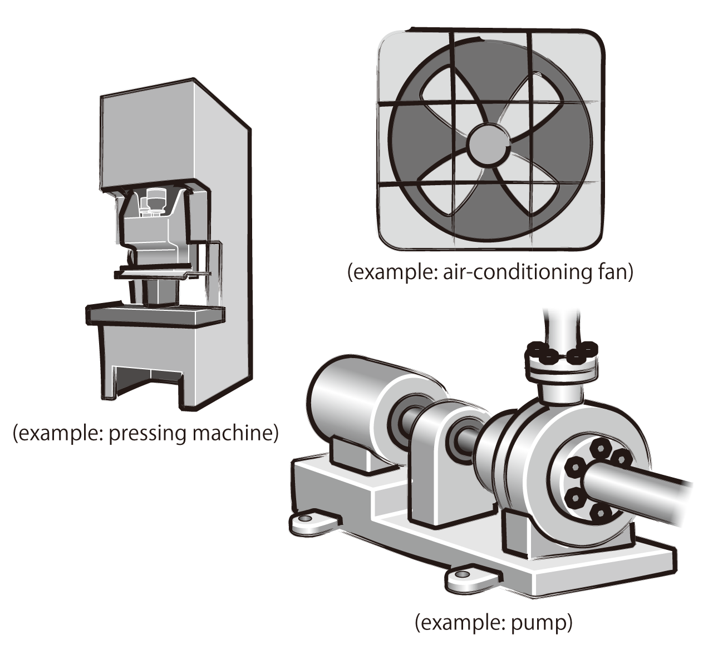
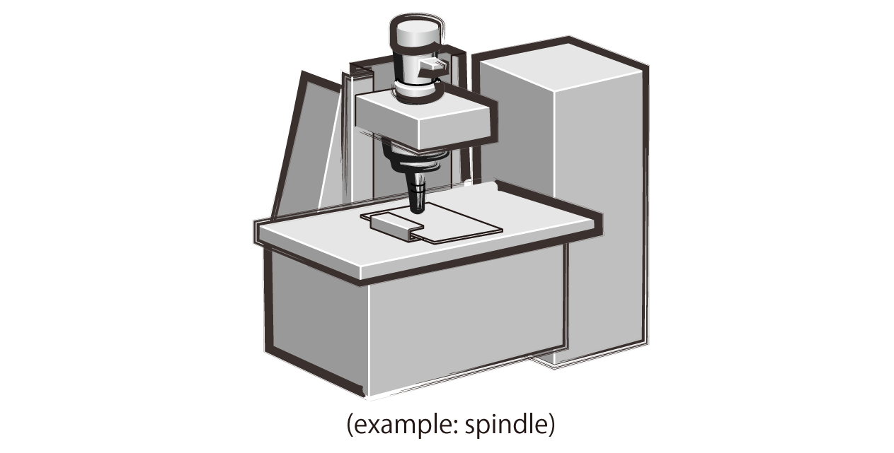
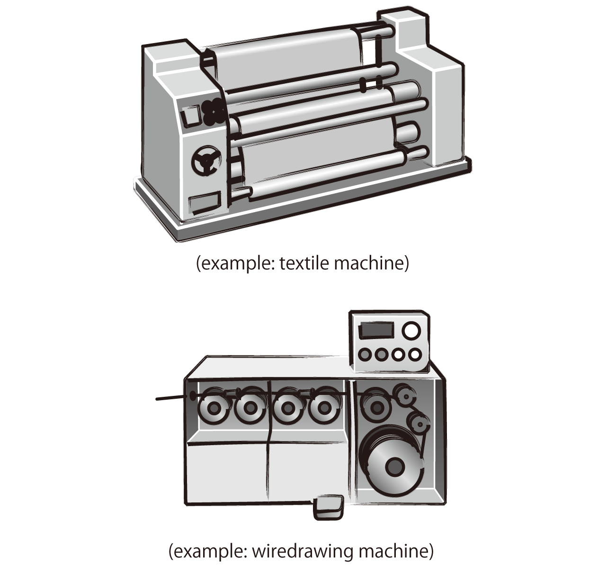

Inverters-FREQROL-D700 Series Mitsubishi's new standard

150%/1Hz high starting torque by General-purpose magnetic flux vector control
General-purpose magnetic flux vector control and auto tuning function are available.
It ensures operation that requires high starting torque, such as transfer machine including conveyer, hoist, lift, etc., washing machine, and agitators.
- High torque of 150%/1Hz and 200%/3Hz (3.7K or less) is realized (when the slip compensation function is valid).
- Auto tuning
Many kinds of motors can be optimally controlled with Mitsubishi original "non-rotation" auto tuning function. (R1 constants tuning)

Brake resistor can be connected
A brake transistor is built-in to the 0.4K or more.
Connecting an optional brake resistor increases regeneration capability.
It is useful for deceleration time reduction of a machine with a large inertia, such as fan, and operation of lift, etc.

Enhanced function
New functions and useful functions from superior models support all sorts of applications.
- Regeneration avoidance function
For a pressing machine and fan rotated faster than the set speed due to the effect of another fan, a trip is less likely to occur by automatically increasing frequency at regeneration. - Optimum excitation control
This control enables the motor efficiency to its optimum. More energy saving is possible in applications with variable load torque characteristic such as fan and pump.

- Power failure-time deceleration-to-stop function
The motor can be decelerated to a stop when a power failure or undervoltage
occur to prevent the motor from coasting.
For fail-safe of machine tool, etc., it is effective to stop the motor when a
power failure occurs.

- Dancer control
Entering position detection signal of dancer roll to use PID control enables
tension control by dancer roll. - Traverse function
Traverse function for wind-up drum of spinning machine and wiredrawing
machine prevents unevenness and deformation at thread winding.
